Decision Trees
Overview
A decision tree is a supervised learning model that makes predictions by asking a chain of simple yes or no questions. Think of a flowchart. It starts at the top, called the root node, with a question like "Is the runtime 130 minutes or less?" Each answer sends you down a branch to another question, and you keep going until you hit a leaf node at the bottom. The leaf gives the final answer, which is usually the most common class among the training examples that ended up there.
Trees can do classification (predicting a category, like Low, Medium or High rating) and regression (predicting a number, like revenue). People use them for credit approval, medical diagnosis, customer churn prediction and fraud detection. A big reason is that you can actually read them. You can trace any prediction back through the exact questions that produced it, which is not true of most models. Trees also handle a mix of feature types without needing any scaling, and they're the building block for stronger models like random forests and gradient boosting.
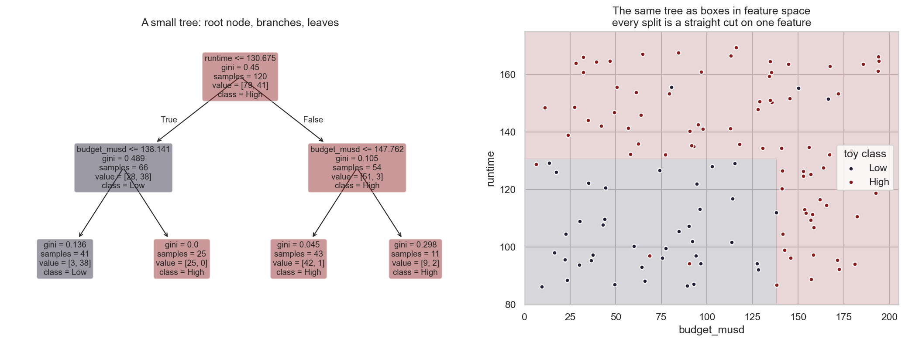
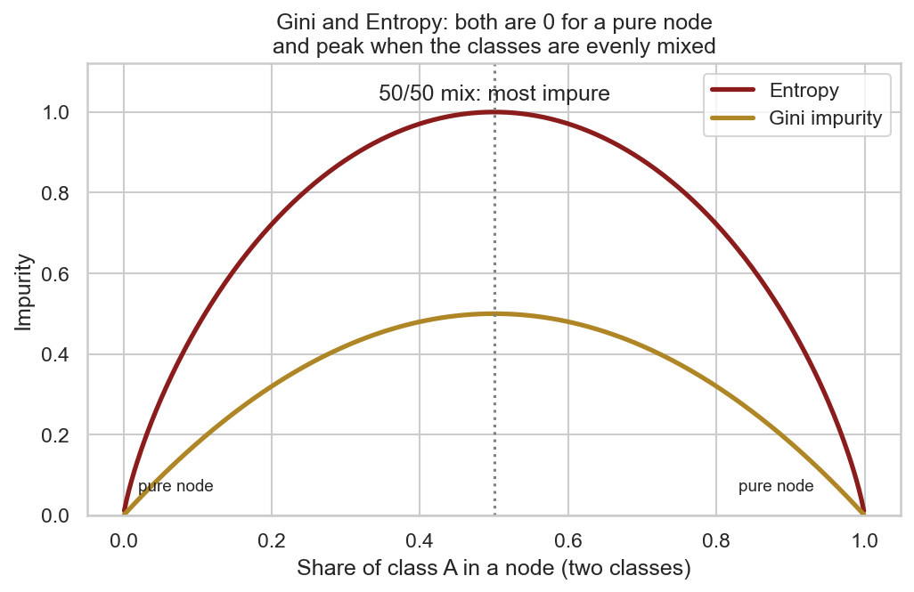
How a tree picks its questions: Gini, Entropy and Information Gain
At every node, the tree has to choose which feature to split on and where to put the cutoff. It tries the options and picks the one that best separates the classes. To do that it needs a way to score how "mixed up" a group is. That's what impurity measures are for.
- Gini impurity is 1 minus the sum of each class's share squared. Picture picking two movies at random from a node. Gini is the chance they'd belong to different classes. A pure node scores 0. For two classes, the worst score is 0.5.
- Entropy comes from information theory. It's the negative sum of each class's share times log base 2 of that share. It measures how uncertain you are about the class of a random example in the node. A pure node is 0. For two classes, a 50/50 split scores 1.
- Information Gain measures how much a split helps. It's the impurity of the parent minus the weighted average impurity of the children, where each child is weighted by how many examples it gets. The tree chooses the split with the biggest gain. The term usually goes with entropy, but the same idea works with Gini.
Gini and entropy almost always pick the same splits. Gini is a bit faster to compute since it has no logarithm, which is why it's the default in sklearn.
A small example
Say we have 10 movies: 5 High and 5 Low. The parent node is as mixed as it gets, so its entropy is 1.0 and its Gini is 0.5. Let's compare two possible splits.
| Split | Left child | Right child | Weighted entropy | Information Gain | Weighted Gini | Gini decrease |
|---|---|---|---|---|---|---|
| A: budget over $50M? | 6 movies: 4 High, 2 Low entropy 0.918, Gini 0.444 | 4 movies: 1 High, 3 Low entropy 0.811, Gini 0.375 | 0.875 | 0.125 | 0.417 | 0.083 |
| B: runtime over 120 min? | 5 movies: 4 High, 1 Low entropy 0.722, Gini 0.320 | 5 movies: 1 High, 4 Low entropy 0.722, Gini 0.320 | 0.722 | 0.278 | 0.320 | 0.180 |
Here's the math for split A, step by step:
- Left child (4 High out of 6): entropy = negative of (4/6 × log2 4/6 + 2/6 × log2 2/6) = 0.918
- Right child (1 High out of 4): entropy = negative of (1/4 × log2 1/4 + 3/4 × log2 3/4) = 0.811
- Weighted average: 6/10 × 0.918 + 4/10 × 0.811 = 0.875
- Information Gain = 1.0 minus 0.875 = 0.125
Split B makes two children that are each 80% one class, so it gains 0.278, more than twice as much as split A. Gini agrees: B drops it by 0.180 and A only by 0.083. So the tree would pick the runtime split. Then it repeats the same process inside each child until it hits a stopping rule.
Why there are basically infinitely many possible trees
For any real dataset you can build a huge number of different trees, and in practice that number is endless. Here's why:
- Every numeric feature has a cutoff that could go anywhere. "Budget over $50M" and "budget over $50.1M" are technically different questions, and there's no limit to how finely you can slice a continuous value.
- Every node can use any feature, and the choices stack up. The number of possible trees grows exponentially as the tree gets deeper.
- You can change the settings: Gini or entropy, how deep the tree can go, the minimum number of examples in a leaf, and so on. Each change gives a different tree.
- Leaving out one feature, or training on a slightly different sample of the data, can change the very first split, and everything below it changes too. Tree 3 below shows exactly that.
Finding the single best tree out of all of them is computationally impossible. That's why algorithms like CART build trees greedily. They pick the best split right now without looking ahead, which is fast and works well enough, but isn't guaranteed to find the best overall tree.
Data Prep
Decision trees are supervised, so they need labeled data. Every movie
needs a known answer that the tree can learn from and that we can check its guesses
against. I used the same label as the Naive Bayes tab, reception_class, based
on the average TMDB rating: Low for 6.5 or below, Medium
for above 6.5 up to 7.2, and High for above 7.2. Same as before, I only
used things a studio knows before release, so vote count, popularity and revenue
stay out to avoid data leakage.
sklearn's trees only accept numbers, so every column has to be numeric. Unlike Naive Bayes,
trees don't need counts or bands. They just split on thresholds, so I could leave budget (in
millions of dollars), runtime, release year, release month, number of genres and number of
spoken languages as raw numbers. Scaling isn't needed either, because a split like "runtime
under 118.5" works the same no matter what units runtime is in. Text fields became 0/1
columns: one column per genre, plus is_english for the original language and
is_us for the production country. After dropping the 172 movies with no budget,
that's 1,828 labeled movies with 26 numeric features.

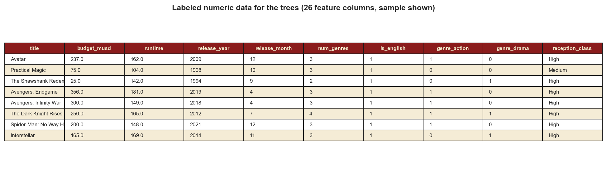
Training set and testing set
I split the labeled data into a training set that the tree is built from and a testing set that's kept away until the end to measure accuracy on unseen movies. The split is 75/25, so 1,371 movies are for training and 457 for testing. It's stratified, so both parts have the same mix of Low, Medium and High, and it's the exact same split used on the Naive Bayes tab. That way both models are graded on the same 457 movies and the comparison is fair.
The two sets have to be disjoint. Trees are especially good at memorizing. A deep enough tree can get every training movie right just by giving each one its own leaf. If testing movies also appeared in training, the tree would just look up answers it already memorized, and the accuracy would mean nothing. Keeping the sets separate is the only way to find out if the rules it learned actually work on new movies. My code checks this and the overlap is zero.
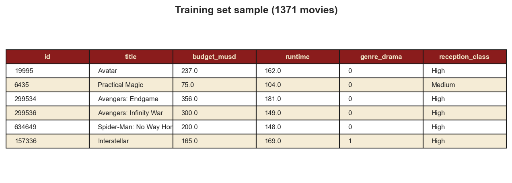
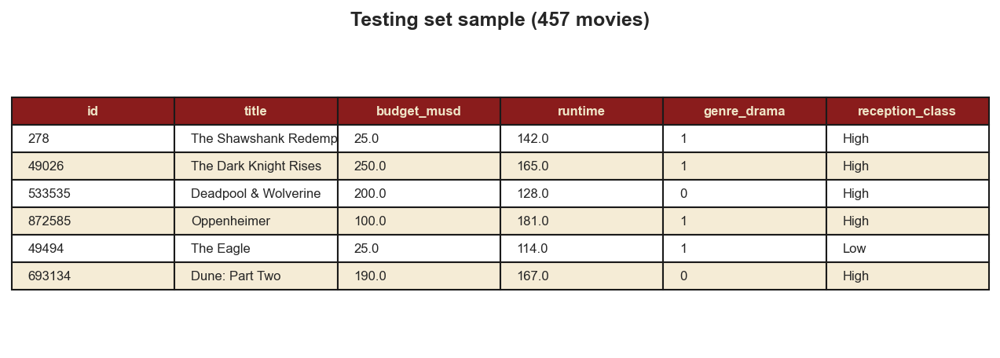
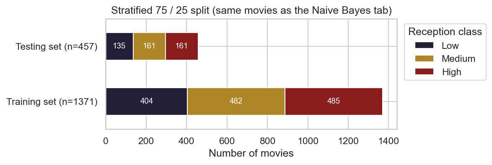
Code
I wrote this in Python using sklearn's DecisionTreeClassifier,
plot_tree and metrics, along with pandas and
matplotlib. The label and the split come from the same shared file the Naive
Bayes code uses.
The three trees:
t1 = DecisionTreeClassifier(criterion="gini", max_depth=3, random_state=42)
t2 = DecisionTreeClassifier(criterion="entropy", max_depth=4,
min_samples_leaf=15, random_state=42)
t3 = DecisionTreeClassifier(criterion="gini", max_depth=3, random_state=42) # trained without genre_drama
t1.fit(X_train, y_train)
pred = t1.predict(X_test)
print(accuracy_score(y_test, pred))
print(confusion_matrix(y_test, pred, labels=["Low", "Medium", "High"]))
plot_tree(t1, feature_names=X.columns, class_names=t1.classes_, filled=True)Results
I built three different trees on the same training data and tested each one on the same 457 movies:
| Tree | Settings | Root split | Leaves | Train accuracy | Test accuracy |
|---|---|---|---|---|---|
| Tree 1 | Gini, max depth 3 | genre_drama | 8 | 52.1% | 48.8% |
| Tree 2 | Entropy, max depth 4, at least 15 movies per leaf | genre_drama | 14 | 53.4% | 50.1% |
| Tree 3 | Gini, max depth 3, genre_drama removed | runtime | 8 | 50.3% | 48.1% |
| Baseline | Always guess the biggest class | 35.2% |
All three trees beat the baseline by 13 to 15 points. The deeper entropy tree did the best at 50.1%. One note for reading the tree pictures: sklearn lists classes in alphabetical order, so every "value = [a, b, c]" in a box means [High, Low, Medium]. Boxes are colored by the class they predict (red for High, gold for Medium, dark for Low), and darker shading means the box is more pure.
Tree 1: Gini, depth 3
The very first question is whether the movie is a drama, and that tells you a lot. The two clearest rules in the tree are:
- Drama, budget of $38.6M or less, released before 2018 → High. This leaf has 185 training movies and 132 of them (71%) are High. That's the cheap, serious drama.
- Not a drama, 118.5 minutes or shorter, not animated → Low. This is the biggest leaf, with 478 movies. Most of them are Low or Medium, and very few are High (only 54).
The longest movies (over roughly 140 to 150 minutes) end up High on both sides of the tree. Animation also flips short non drama movies from Low to High.
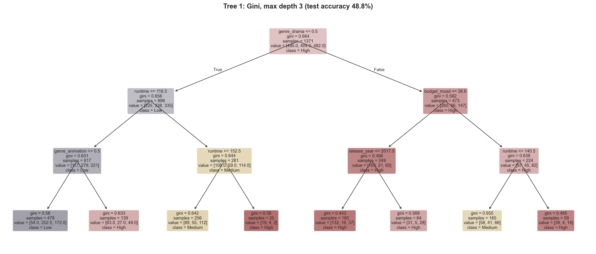
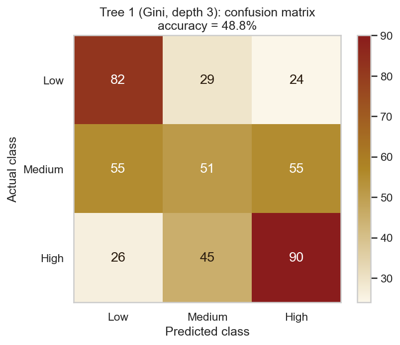
Tree 2: Entropy, depth 4, at least 15 movies per leaf
Switching to entropy and allowing one more level gives the same top half as Tree 1, plus some sharper leaves. Dramas over 133.5 minutes with a budget under $115M are High 64% of the time. Non drama animated films released after 2017 are High in 26 of 44 cases. Short non drama movies under 96.5 minutes that aren't animated are almost all Low or Medium, with only 5 High out of 125.
This tree leans hard toward calling things High. It catches 72% of the High movies, the best of any model on either tab, but it only gets 19% of the Medium ones. The minimum leaf size of 15 also keeps it from making tiny leaves based on just a few movies.
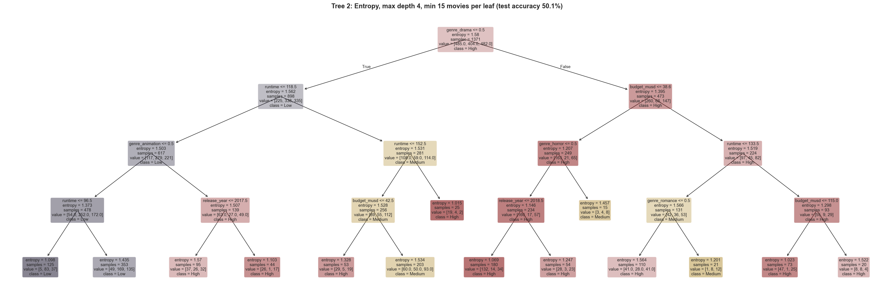
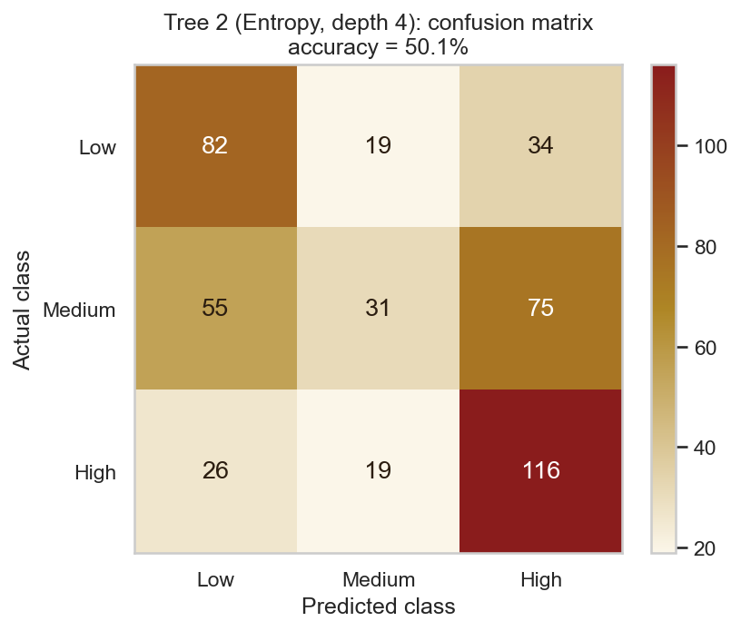
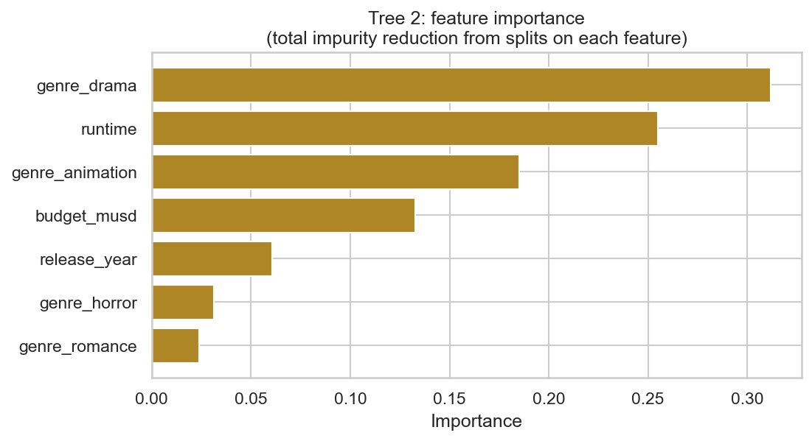
Tree 3: Gini, depth 3, without the drama column
For the third tree I took out genre_drama, the root of the first two trees,
just to see what would happen. The result is a completely different tree. Now the root
splits on runtime at 118.5 minutes. Long movies with a budget under $44.75M
released before 2018 become the strongest High leaf (104 of 141, or 74%). Short movies over
$20.5M that aren't animated become the main Low leaf.
The accuracy barely moved (48.1% vs. 48.8%). Runtime and budget are basically stepping in for drama, since dramas tend to be longer and cheaper. This is the "infinitely many trees" point in action: taking out one column changed every split, but the model ended up just as good.
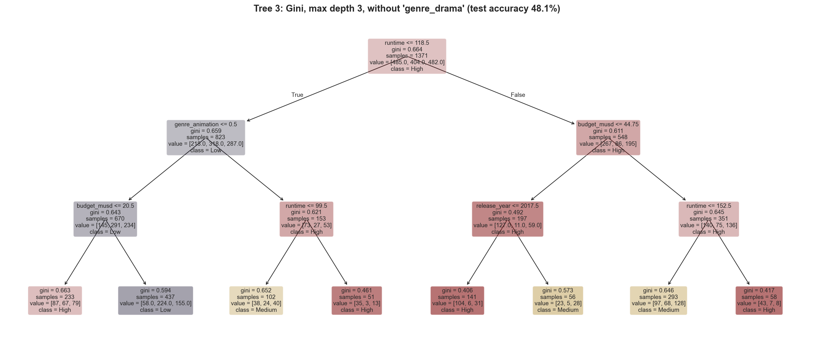
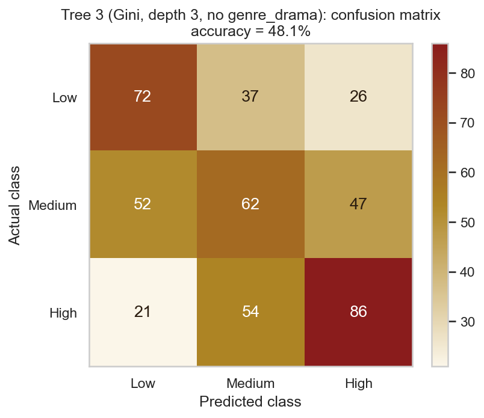
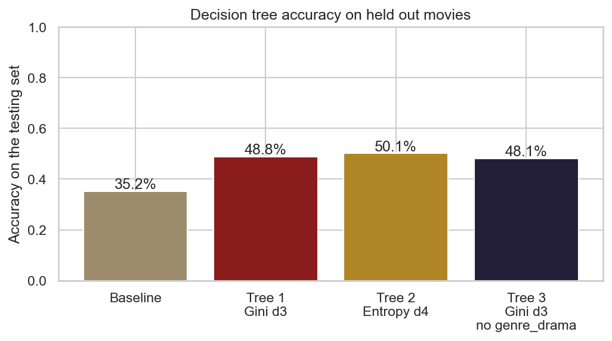
How deep should a tree go?
I also trained Gini trees at every depth from 1 to 15. Training accuracy keeps climbing, from 44% all the way to 96%. Testing accuracy peaks at about 53% around depth 8 and then slowly drops. With no depth limit at all, the tree grows to depth 20 with 486 leaves. It gets 100% of the training movies right but only 50.5% of the testing ones. That's overfitting in its purest form. The tree memorizes the training movies and stops learning anything general. It's also why the testing set matters so much: training accuracy alone would make the deep tree look perfect.
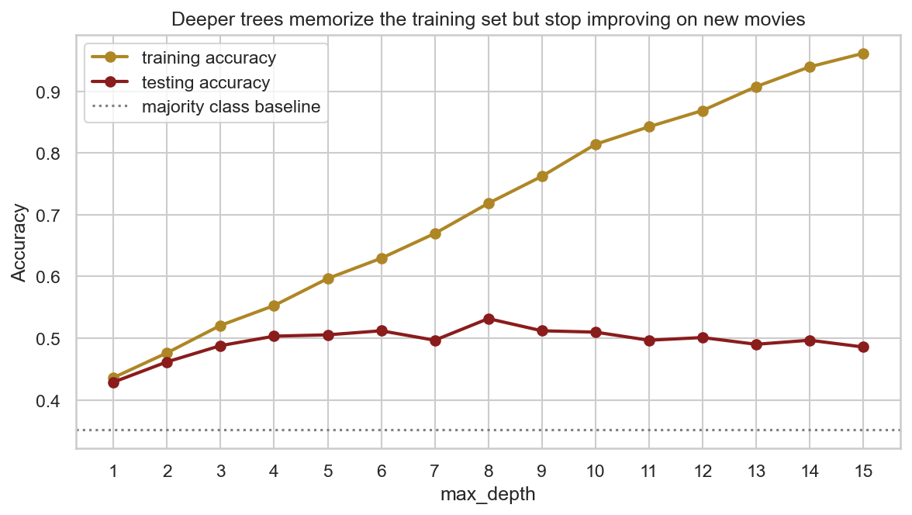
Conclusions
The trees gave me a set of plain rules for predicting how audiences will react to a movie, using only what's known before release. Those rules line up well with what Naive Bayes found.
- Drama, runtime and animation matter most. Every tree used them at the top. Dramas, long films and animated films lean High. Short, non animated, non drama movies, which is a lot of the action, comedy and horror crowd, lean Low.
- Spending more doesn't buy better ratings. Inside the drama branch, the cheaper films (under about $39M) rated higher. Tree 3 found the same thing for long movies. This matches what I saw in clustering and PCA, where budget and rating were nearly unrelated.
- Newer films are a bit harder to rate highly. Several trees split on release year around 2017 or 2018, with older films more likely to be High. Some of that is probably survivorship. Older movies that are still popular enough to be in my sample tend to be the ones people remember fondly.
- The middle is still hard. Like Naive Bayes, the trees struggle with Medium movies. The features say which direction a movie leans but can't pin down "pretty good" vs. "just okay".
Comparing the two tabs, Naive Bayes (57.8%) beat the best tree (50.1%) on the exact same testing movies. That makes sense for this data. Most of my features are small yes or no signals, like a dozen genres, the language and the season. Naive Bayes adds up all of them at once, while a shallow tree can only ask a few questions before it has to stop. The trees win on being easy to explain though. A rule like "a drama under $39M made before 2018 is probably rated High" is something anyone in a studio could read and act on.